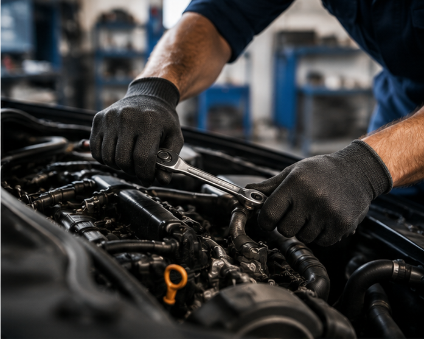
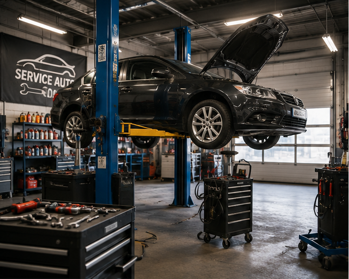
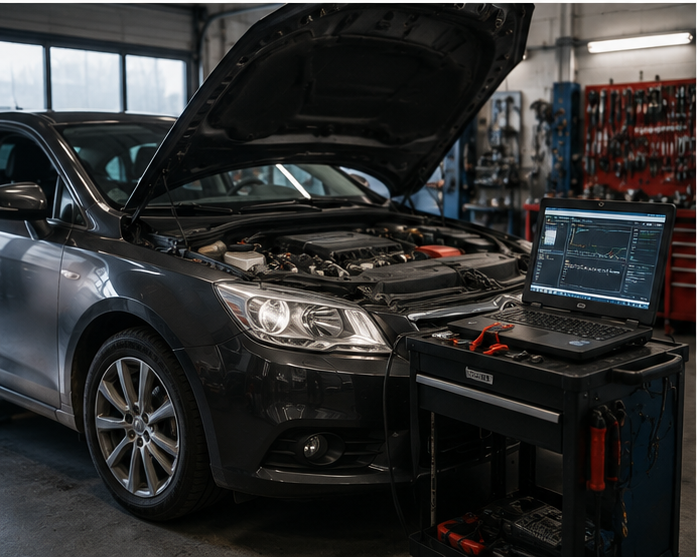
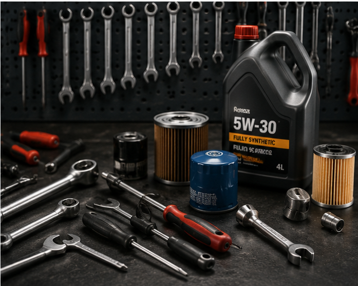

01
Mecanică generală
Frâne, suspensie, distribuție, ambreiaj și revizii.
Exemplu de site tehnic pentru service auto: servicii, diagnoză, programări și contact rapid, cu aspect puternic și profesional.
Programează mașina

Frâne, suspensie, distribuție, ambreiaj și revizii.

Citire erori, verificări și identificarea rapidă a problemelor.

Ulei, filtre și întreținere periodică pentru funcționare corectă.
În varianta reală putem integra formular pentru marcă, model, an, simptome și fotografie.
Un site de service auto poate prezenta clar operațiunile, consumabilele și tipurile de intervenții, astfel încât clientul să înțeleagă imediat ce oferi.
Telefon, WhatsApp sau formular online — alegem varianta potrivită service-ului.
Vreau un site asemănător← Înapoi la Făurit de Busuioc